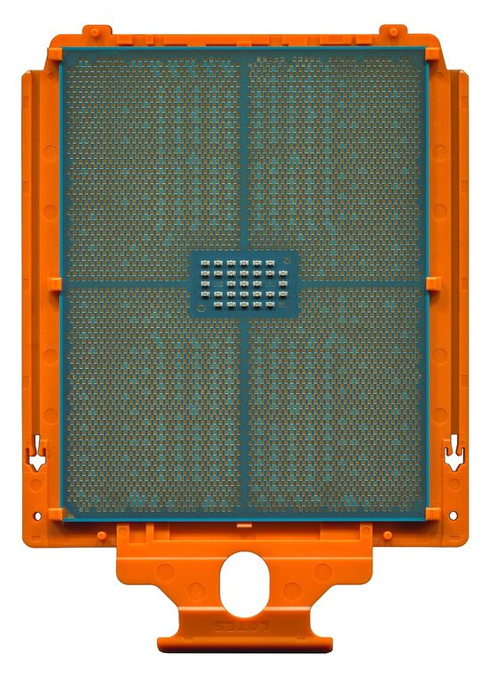

[ SERVER AND WORKSTATION PROCESSORS // IDENTIFIED CPU ]
AMD Ryzen Threadripper 7970X
Storm Peak Zen 4 workstation CPU, 2023. 32 cores/64 threads; 4.0/5.3 GHz base/max; 128 MB L3; 350 W; sTR5; quad DDR5-5200.

MODEL IDENTIFICATION: AMD Ryzen Threadripper 7970X. Match full model suffix, stepping and package to the physical item and cited documentation.
Recorded specifications
| Cataloged model | AMD Ryzen Threadripper 7970X |
|---|---|
| Era / family | Storm Peak Zen 4 workstation CPU, 2023. |
| Model specifications | 32 cores/64 threads; 4.0/5.3 GHz base/max; 128 MB L3; 350 W; sTR5; quad DDR5-5200. |
| Compatibility | TRX50/sTR5 BIOS and cooling; not sTRX4/TRX40. |
| Variants / limits | Non-PRO 32-core; 7980X 64-core; PRO WRX90 differs. |
Compatibility and variants
- TRX50/sTR5 BIOS and cooling; not sTRX4/TRX40.
- Non-PRO 32-core; 7980X 64-core; PRO WRX90 differs.
- Check system-vendor CPU support, board revision, firmware minimum, package, memory, cooling and power before installation; similar socket naming does not prove compatibility.
Service and archival notes
Record board, BIOS, DIMMs, cooler and socket torque.
Archive the complete marking/OPN/sSpec, stepping, physical condition, tested host revision, firmware, memory population, cooling, and test conditions. Distinguish published limits from measurements.
Sources & further reading
- Model identification/specification search — AMD Ryzen Threadripper 7970XModel-level part identification and specification cross-reference.
- AMD technical archive — AMD Ryzen Threadripper 7970X product familyAMD-authored processor data books and family specifications.
- AMD product-history reference — AMD Ryzen Threadripper 7970XManufacturer history reference for product-family context.
- Gamers Nexus — Crazy Efficient: AMD Threadripper 7980X & 7970X CPU Review & BenchmarksIndependent video review; treat as supplementary context, not primary manufacturer documentation.
Use the matching manufacturer data sheet revision and platform vendor’s CPU list for final fit decisions.